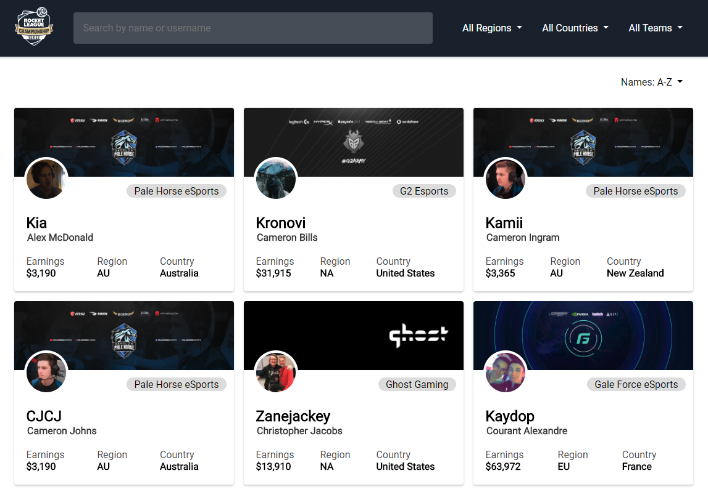
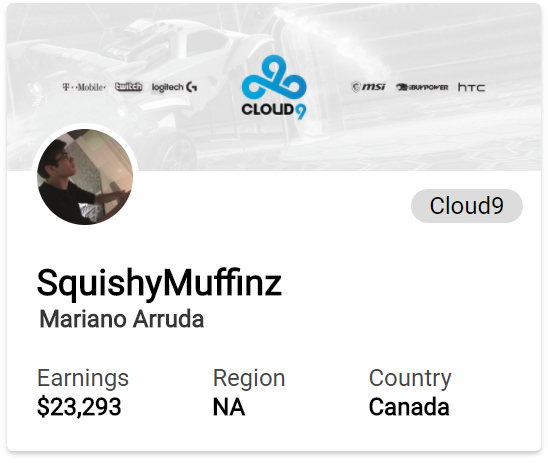
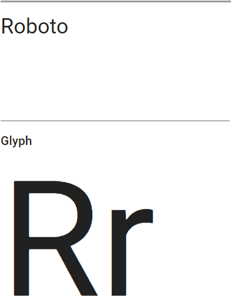
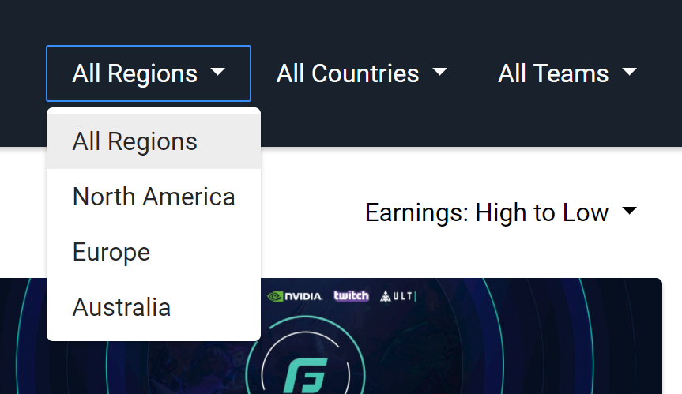
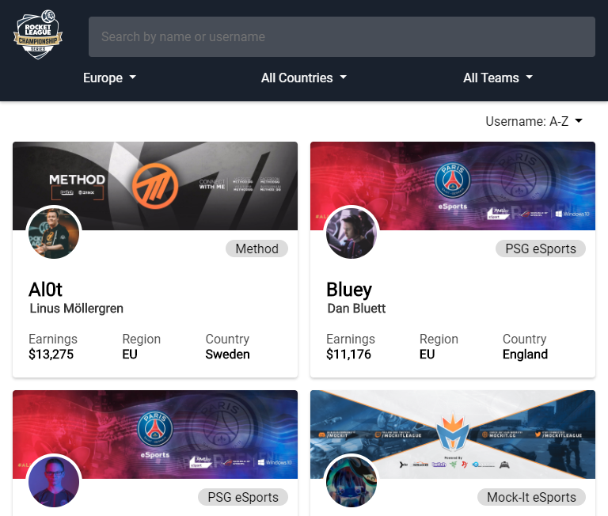
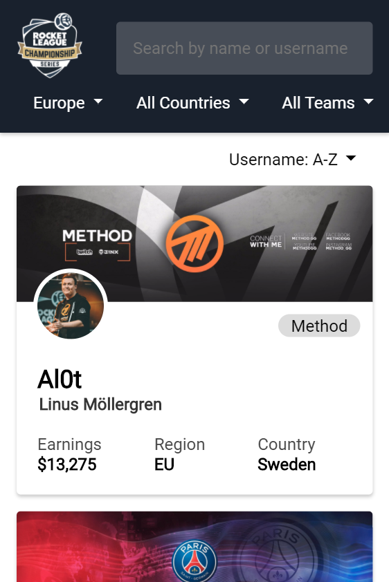

Design Principles
Text
The font selection is a readable & common sans-serif font with equally common fallbacks.


Color
High color contrast between dropdowns/card text and their backgrounds ensures readability.

Composition
A 3-column grid on desktops fits teams neatly on 1 row and takes advantage of screen space to make searching easier. 2-column for tablets (tablet version below) is designed to maintain readability and prevent the clutter of 3 columns in too small a space. The 1-column mobile design complements the platform's natural use of scrolling. Information types are visual distinct & familiar (e.g. twitter design on cards & google design on searchbar)


Back to Home